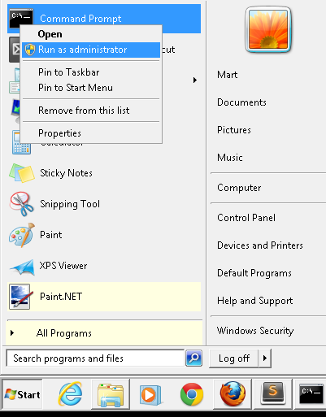

This software was designed to be a simple way to control OpenVPN on windows machines giving accurate feedback about the connection state. The software is composed of two interdependent programs.
WARNING: At the time of this writing this software is still in ALPHA state. There is no installer and some manual work is required to install and start the windows service. The windows installer to automate all this should be ready soon.
The windows service is the one in charge of opening the connection to the VPN as well as closing it and monitoring its state.
Install TAP Windows from the client distribution by double-clicking on the installer.
To let the monitor know where the OpenVPN client is, you must have a system-wide environment variable called OPENVPN_HOME that points to the folder where your OpenVPN installation is. Make sure this variable is available to all users, not only to your current user.
To install the windows service you will need to open a Command Prompt in Administrator mode. For this go to your windows menu, right click on the Command Prompt and select the item labeled as Run as administrator.

Once you are at the command prompt, go to the directory where you unpacked the supplied .ZIP file and go into the service folder and run the following commands:
c:\unpacked-zip\service> ovpnmon -install
This will install the service in your windows machine. To start the service type:
c:\unpacked-zip\service> net start ovpnmon
ovpnmon by the way is the name of the service. If you open your Windows Task Manager and go to the services tab you should see it listed there.
From the previous command you should get the following output:
The OVPN monitor service is starting.
The OVPN monitor service was started successfully.
Once you start this application it will sit rather quietly in your system tray until you establish the connection. You do not have to install this one, it is a self-standing executable. You may place it in your Start Up items if you wish to have it available upon startup.

Choose Configure... to set the configuration file provided by your VPN administrator. This configuration file will be used in every subsequent connection.

The GUI client provides a way to validate the VPN connection against a preconfigured server inside of the VPN. This is useful as a double check, but please be mindful that this is not foolproof and if your network has been compromised it would be easy to fool the browser with a fake page. So trust only what the system tray icon says.
When you click on Go online... the client will take a few seconds to initialize the connection. Please wait untill your connection is secured.

You are now connected to the VPN. Plase validate the IP address of the gateway and the address of your interface, to make absolutely sure that your connection is secured.